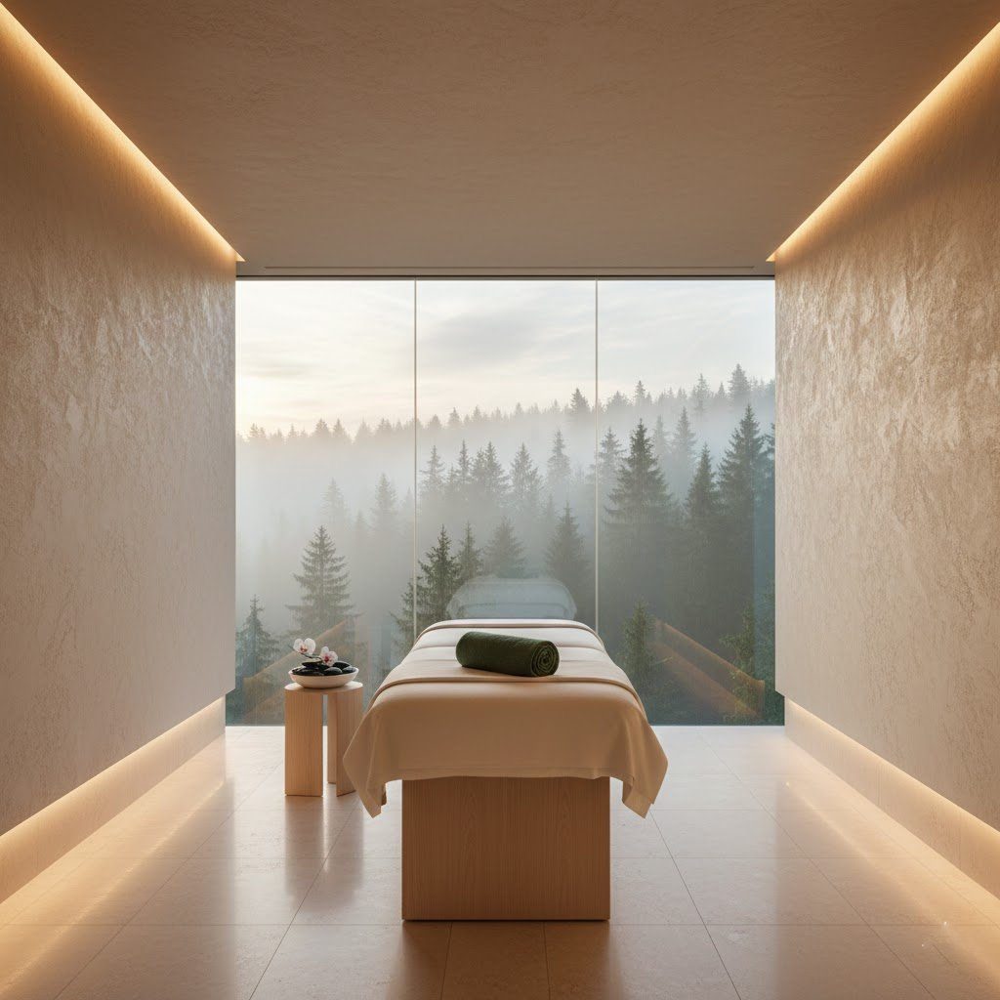

El Arte del Bienestar.
Descubra el santuario donde la arquitectura minimalista y la medicina antigua se unen para restaurar su equilibrio natural.

Espacios que Respira.
En Zenith, cada rincón ha sido diseñado para inducir la calma. Utilizamos piedra natural de Alabastro y lino orgánico para crear una atmósfera de pureza absoluta y sofisticación discreta.
Nuestra propiedad en el desierto ofrece un aislamiento total, permitiendo un reconexión profunda con el silencio y la naturaleza.
Nuestro Manifiesto →Nuestra Curación
Servicios Exclusivos
Hidroterapia
Circuitos de agua mineralizada a temperaturas controladas para desintoxicar el cuerpo y mejorar la circulación.
Detalles →Bio-Restauración
Tratamientos faciales y corporales utilizando extractos botánicos de alta pureza y tecnología no invasiva.
Detalles →Neuro-Silencio
Sesiones de meditación guiada con aislamiento acústico completo para resetear el sistema nervioso.
Detalles →